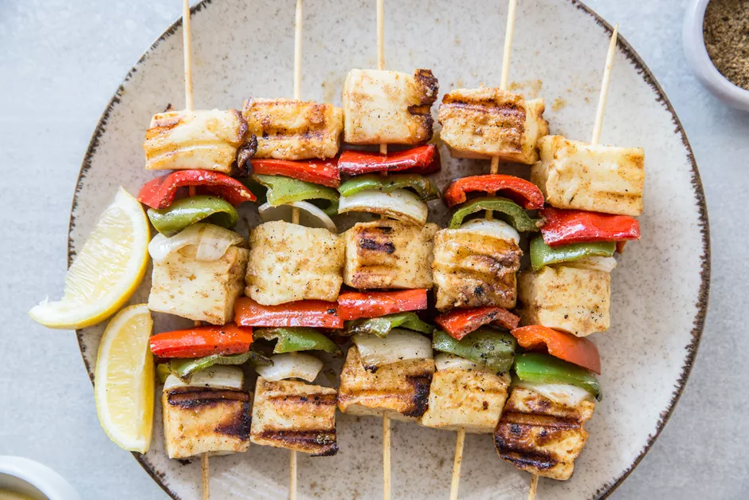

Tandoori Paneer Tikka Kebabs

Perfect recipe for non-meat eaters, a flavorful choice with
great texture
Vegetarian options at summer cookouts are often limited to veggies, but
soft, juicy chunks pf paneer are marinated in tandoori masala and skewered and grilled along with vegetables...
Colorful dish that's bursting with complex spice is great to serve at your next barbecue.
Ingredients
- 3 tablespoons Tandoori masala spice mix, divided
- 1/4 cup yogurt
- 6 tablespoons vegetable oil, or canola or sunflower, divided
- Kosher salt, to taste
- 1/2 pound paneer (Indian cottage cheese), cut into 30 (2-inch) cubes
- 1 large onion, cut into 1-inch square pieces
- 1 pepper red bell pepper, deseeded and cut into 2-inch cubes
- 1 pepper green bell pepper, deseeded and cut into 2-inch cubes
- 2 tablespoons chaat masala
- 1 tsp lemon juice
- Lemon wedges, for garnish
Steps to Make it
- Mix 2-1/2 tablespoons of tandoori masala with yogurt, 2 tablespoons of
cooking oil, and salt to taste, making a smooth paste.
- Add paneer chunks to bowl and mix gently to coat, Cover and marinate
in refrigerator for 2 hours.
- Mix remaining 1/2 tablespoons of tandoori masala with onions to coat
them well.
- Thread marinated paneer, onions, and green and red bell pepper pieces onto bamboo skewers
- Preheat grill to medium. Place paneer skewers on hot grill and brush with a little cooking oil.
- Grill until paneer is light golden color and onions are soft, 4 to 5 minutes per side. Do not overcook, or paneer will become rubbery.
- Remove to a plate and sprinkle with chaat masala.
- Squeeze some lemon juice over the paneer skewers, garnish with lemon wedges, and serve hot.
Return to main page